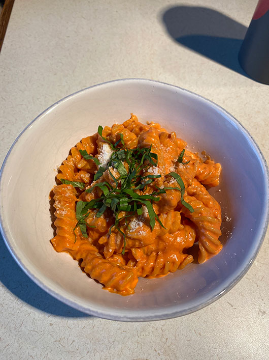

Skip to Content
Spicy Fusilli

Ingredients
- EVOO
- ½ Shallot
- 2 Garlic cloves
- ½ cup of tomato paste
- 2 Tbs of vodka
- 1 cup of heavy cream
- Salt
- Pepper
- 1 ounce of parmesan
- ¼ cup of fresh basil
- 1 tsp red pepper flakes
- 2 Tbs unsalted butter
- 1 box of fusilli pasta
Instructions
- Boil water in large pot according to pasta instructions
- Finely chop garlic and shallot
- Preheat 2 Tbs of EVOO in a large skillet/pan
- The pan should have taller sides so the pasta can be added later
- Add fusilli to water
- Add garlic and shallot to olive oil until softened and fragrant
- Add tomato paste
- Mix until it is brick red (about 2-3 minutes)
- Add vodka and mix until evaporated
- Add the heavy cream and red pepper flakes and mix
- Season sauce with salt and pepper to taste
- Reserve ½ cup of pasta water then strain pasta
- Add pasta to sauce with butter and pasta water
- Mix until butter is melted
- Add parmesan, mix until combined
- Top with chopped basil and more parm
- ENJOY!